- From
- Gregory Thrust <gregory@hockeystick-capital.example>
- Sent
- Friday, 27 November 2026 04:12
- To
- Founder <you@your-startup.example>
- Cc
- Name withheld for legal reasons
- Subject
- Applied Bureaucratics: scaling compute from one clerk to a god
- Pack
- GregTech: New Horizons, with our fork of Applied Energistics 2
The Founder's ManualEverything you need to know about compute, and nothing your employees need to know
Kid, you came to me with an ME network and a dream. Here's the market reality: in this pack, AE2 autocrafting needs compute. Somebody has to work out every crafting plan, file it while it runs, and hand its tasks out to your machines. That somebody used to be free. Free is over.
This manual is how you build that somebody, one funding round per voltage tier, from a villager at a desk to a thing at UV that we do not mention on earnings calls. Every number in here is real. I don't do vibes.
- HVPre-seedThe Desk: one clerk
- EVSeries AThe Mainframe and its office
- IVSeries BThe Internet, gigs and bots
- LuVSeries CThe AI Data Center
- ZPMLegacyStock CPUs, weakened
- UVExitThe Singularity
The thesis
You sell three things. Know them cold.
Every great company sells one thing. You sell three, and if you can't name them at a board meeting I will replace you with an Enderman.
Each facility you build is a crafting CPU on your ME network, and it supplies three capacities:
| Capacity | Unit | What it limits | Whose is it | Comes from |
|---|---|---|---|---|
| Planning | steps/s | How fast a crafting plan is worked out | Pooled across the whole network | Workers' time, and paper |
| Filing | bytes | The largest plan one job slot can hold | The facility running the job | Books, tape reels, disk arrays |
| Dispatch | ops/s | How fast a running job hands out tasks (one op = one pattern pushed to one machine) | The facility running the job | Workers' time |
Output is measured in FTE, full-time equivalents. A worker plans while its facility's slots are idle and dispatches while they're busy. The conversion is fixed:
Plans take time now
On the craft confirmation screen, while the plan is still calculating, Start reads Queue. Press it and walk away. The plan keeps calculating and shows up in the crafting status screen as Planning. When it's ready it starts by itself on a free CPU, or waits as Waiting for CPU, and chat tells you when it starts. Shift-clicking Next queues at once. You can cancel a queued plan from the crafting status screen.
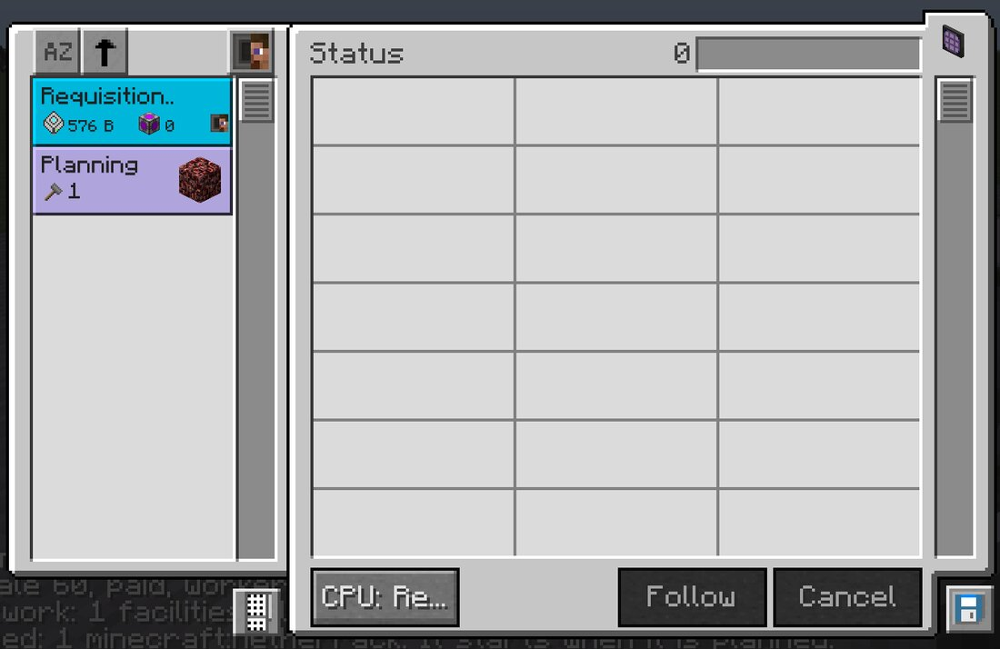
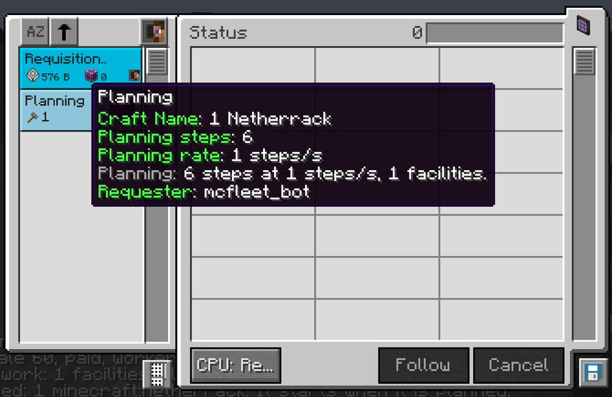
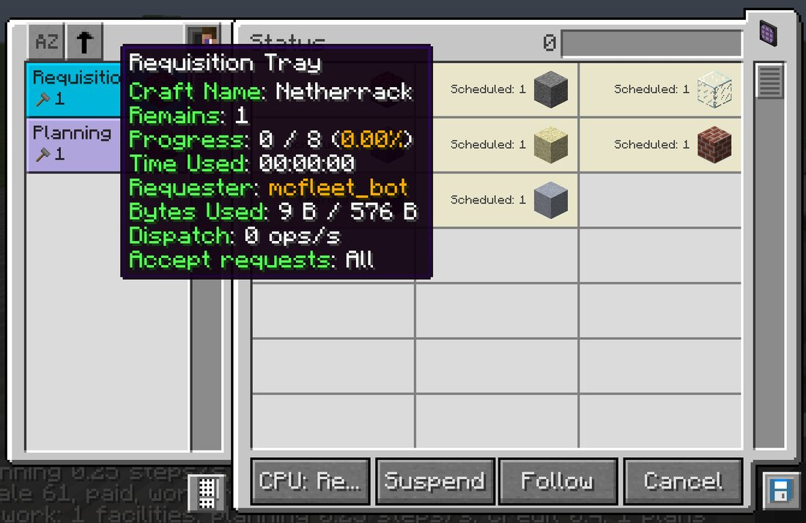
Protective provisions
I negotiated these into the term sheet myself. They're why compute can slow you down but never burn you:
- Slowdown only. Nothing is lost, miscrafted or cancelled because of compute. No soft factor (morale, paper, training) pushes a facility below 25 % of its output. A facility with no workers, power or structure is simply off, and its jobs wait.
- Founders first. When players and machines both have plans in progress on a network, half of each tick's planning goes to the players' plans, so level maintainers can't starve the person at the terminal.
- Standing orders. A request that repeats one of the network's last 64 (same output, same requester) is charged 10 % of its steps. Level-maintained bases stay playable.
- Overtime. An AE2 caller that needs a plan immediately gets it, and the steps become debt that the network pays off before any other plan advances.
- Committees. Several staffed facilities on one network plan by committee: their summed rate is divided by the square root of how many there are. Machine facilities (the Data Center, the Singularity, stock CPUs) add up without the penalty.
Read that last one twice. Two desks are not twice one desk. They never are.
Pre-seed · HV
The Desk. Every unicorn started in a garage.
Sole proprietorship. You are the IT department. Sit down.
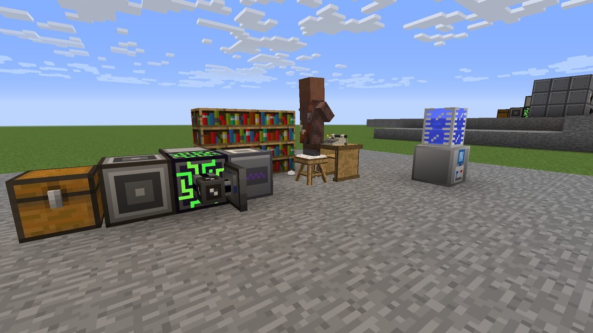
Build it
- A Requisition Tray on ME cable. It's crafted around an HV machine hull and books.
- A BiblioCraft seat within 2 blocks of the tray, with a BiblioCraft desk next to the seat.
- A typewriter within a block of the seat. No typewriter, no planning.
- Optional: a desk bell within a block of the seat, for ×1.25 dispatch.
- Bookcases within 3 blocks: 64 B of Filing per book, 192 B per vanilla bookshelf, up to 8192 B.
- Paper in the tray: one sheet covers 256 planning steps. Without paper, planning runs at 25 %.
- Emeralds in the tray pay wages.
Then staff it. Founder mode: sit on the seat yourself and you're the worker. It's the cheapest hire you'll ever make and the least scalable. A window opens with your work: add two digits, type a three-letter captcha, click the scary number in a grid of digits, fill in the one missing digit of a 3 × 3 sudoku. Each one takes two seconds and buys you four seconds of focus, up to ten ahead, and the Desk works only while you're focused. Close the window and it stops within ten seconds; right-click the typewriter to get back on the grind. When you're ready to delegate, read the next section.
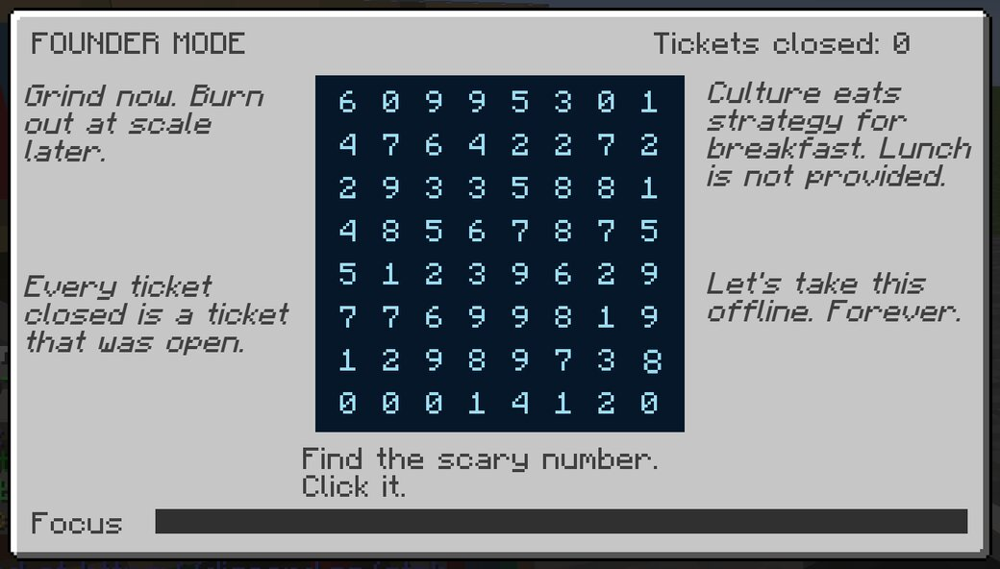
The quotes around the puzzles are from my LinkedIn. You're welcome.
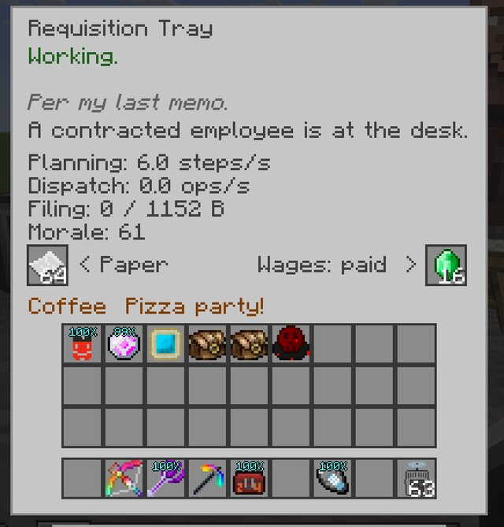
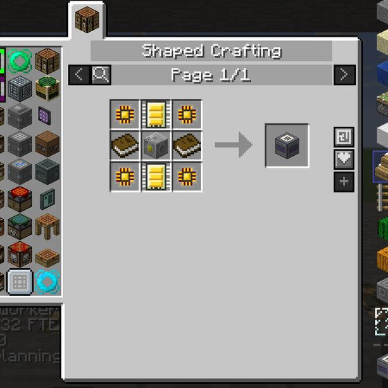
The top line of the window, and of /ab status, always names the one thing holding the facility back. The full list of those, with fixes, is in due diligence.
Human capital
People are our greatest asset. Contractually.
We're like a family here. A family with an Employment Contract, a payroll in emeralds, and a Pink Slip in the drawer.
Hiring
- Right-click a villager with an Employment Contract. You get a Signed Contract: their file.
- Right-click a seat with the Signed Contract. The villager walks over, sits down and stays there. Keep the file: it moves them again, from up to 32 blocks away.
- To let someone go, use a Pink Slip. We thank them for their contributions.
Contracted workers on shift take no damage. Profession matters:
| Villager | Good at | Multiplier |
|---|---|---|
| Librarian | Planning (analysts) | ×1.5 planning |
| Farmer | Dispatch (logistics) | ×1.5 dispatch |
| Priest | Both (forecasting is a matter of faith) | ×1.25 both |
| Everyone else | Showing up | ×1 |
Payroll
Each worker earns one wage unit per day of uptime, and an emerald pays 8 units. So one emerald covers one worker for 8 days, or 8 workers for one. Miss payroll and the morale target drops by 40 points, the facility says Limited by: wages unpaid, and you'll deserve it.
Morale
Every facility has one morale number from 0 to 100. It drifts one point a minute towards a target, and it scales output:
The target starts at 50 and moves like this:
| Factor | Target | Notes |
|---|---|---|
| Wages paid | +10 | Unpaid: −40 |
| Amenities within 4 blocks of the seat | up to +40 | Light level 10 or more +5; a clock +5; a potted plant +5; a window with sky behind it +10; each poster or painting +1 |
| Break room | up to +40 | The workers' break rooms, averaged. See break rooms |
| Party | +20 | For a day after you put a cake or a pizza in a break room machine |
| Crowded | −10 | More than 6 seats in the 5 × 5 around the seat |
| Smog | −5 to −20 | −5 at the chunk's pollution smog threshold, up to −20 at four times it |
| Managers | 0 to −15 each | See the management table |
| Crunch | −30 | While crunch is on |
Crunch is a redstone signal on the tray or the controller: output ×1.5, morale target −30. It's worth it for about 25 minutes, until morale catches up with you. Use it for a launch, not a lifestyle.
Coffee is cheaper than raises. A pizza party is cheaper than coffee.
Break rooms
Your people need somewhere to stand around. Give them one, and they'll come back happier and a little later. There are three machines, and each finds its own workers every two minutes: everyone seated in its area, within four blocks up or down. So it serves one floor, and a tower needs one per floor.
| Machine | Power | Serves | Stock | Morale |
|---|---|---|---|---|
| Water Cooler | none | its chunk | An Iron Tanks tank of water on top: 250 mL a visit | +5 |
| Coffee Machine | HV, 4096 EU a cup | 3 × 3 chunks | Coffee beans. Sugar, cocoa powder and milk (or soy milk) if it has them | +4, +2 per extra |
| Snack Vending Machine | EV, 16384 EU a sandwich | 5 × 5 chunks | Sandwiches | +4, +2 per kind, up to 6 |
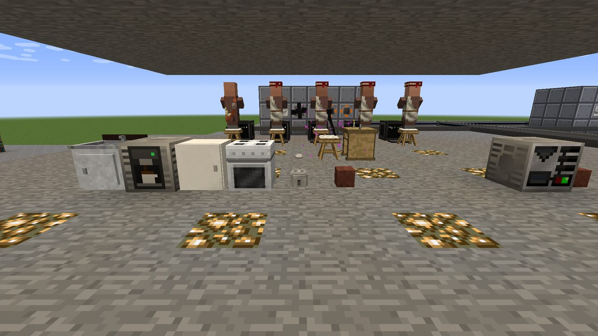
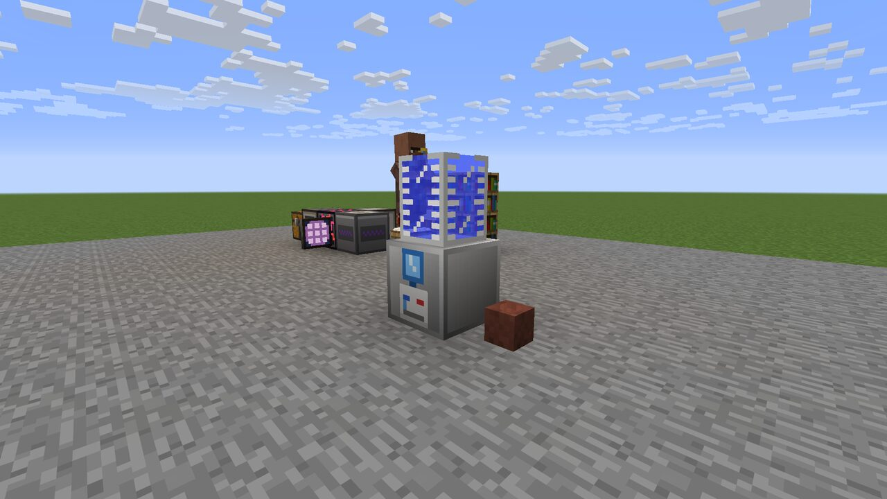
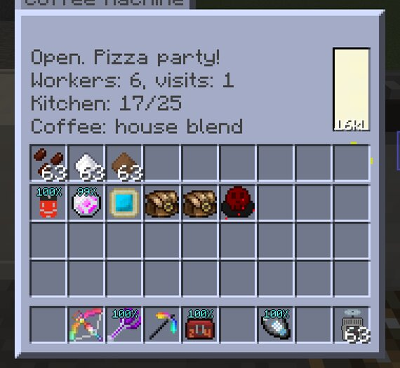
Then make it a microkitchen. Cooking for Blockheads fixtures within six blocks of the machine add 4 each per kind (sink, fridge, oven, counters, cabinets, toaster), up to 20. Plants add 1 each, up to 5: potted plants, Natura's bushes, anything that grows. The coffee's bonus belongs to the office: it's the average of the extras in their recent cups.
The catch is breaks. A worker bound to an open break room takes 30 seconds every five minutes, walks over, gets served, loiters, and walks back. The better the kitchen, the longer and more often, by up to a quarter. While they're away the Desk or Mainframe says "on a break" and does without them. A paid manager cuts it to 20 seconds every seven minutes, however nice the kitchen is. Managers also make their presence felt now and then: the Endermen scream.
Free snacks are a retention strategy. Retention is a strategy for not paying recruiters.
Series A · EV
The Mainframe. Nobody ever got fired for buying one.
Now we're a real company. Real hardware, a real office, and a real org chart. Middle management is where scale goes to be multiplied or to die.
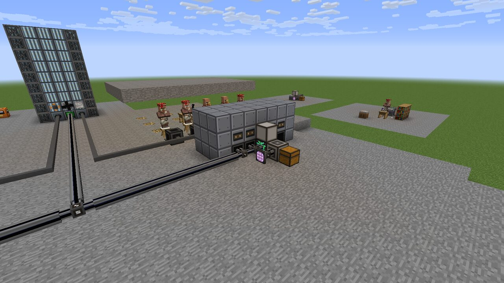
Build it
- A 7 × 4 × 3 GregTech multiblock of Mainframe Casing, with a row of Tape Reel Windows.
- Four OpenComputers racks beside the controller. Their servers are its hardware: 8, 16 or 32 FTE for a tier 1, 2 or 3 server. The office can't outwork its hardware.
- A Terminal Concentrator in the middle of the back face.
- Hatches anywhere on the casing: an EV energy hatch, a maintenance hatch, an input bus and an output bus.
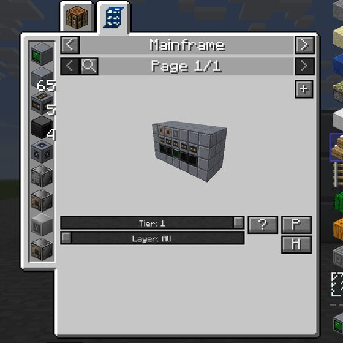
The input bus takes everything the Mainframe consumes or files with:
- Magnetic Tape Reels (16 KiB of Filing) and High-Density Tape Reels (64 KiB), up to 1 MiB. They aren't consumed.
- Paper, or Punch Cards at four sheets of planning each.
- Emeralds for wages; ender pearls and gold ingots for managers.
- Blank Data Tapes: the Mainframe records a Work Log on one for every 1000 operations it dispatches, into the output bus. Keep those. Series C runs on them.
The office
Put it wherever you like: OpenComputers screens on OC cable from the concentrator. Each terminal is a proper workstation: a seat, an OC keyboard beside it, and the screen right behind the keyboard, at its height or one up. A contracted worker goes on the seat and faces the keyboard. The concentrator powers the screens, up to 32 terminals.
A worker parked by a screen with no keyboard just stares at it, and bills you for the privilege. The status line says "no keyboard in front of the screens". Buy the keyboards.
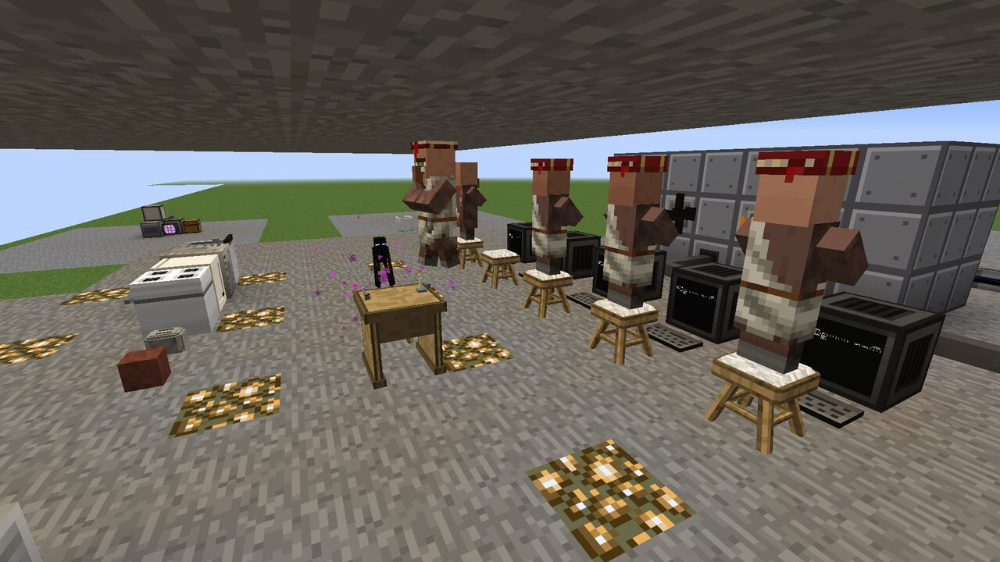
Management
Unmanaged people don't cooperate. A facility's FTE is the sum of its unmanaged units divided by the square root of how many there are. A manager's team counts as the sum of its reports times the manager's efficiency, up to 8 reports. Managers produce nothing. They are required.
Those are the showcase office's real figures. A manager needs a seat with a BiblioCraft desk and bell next to it, and a Management Contract instead of an Employment Contract.
| Role | Who | Manages | Efficiency | Morale | Upkeep |
|---|---|---|---|---|---|
| Team lead | Enderman | 8 workers within 12 blocks | 0.80 | 0 | An ender pearl a day |
| Team lead | Crimson Cleric (Thaumcraft) | 8 workers within 12 blocks | 0.90 | −5 | A gold ingot a day |
| Team lead, executive | Tamed demon (Blood Magic) | 8 workers within 12 blocks | 1.00 | −10 | 100 LP a minute |
| Director | A boss: a Wither, or a Twilight Forest boss | 8 team leads within 24 blocks | 0.95 | −15 | A diamond a day |
Any mob with a boss bar can direct, and so can the Twilight Forest bosses that have none (the Naga, the Lich, the Minoshroom, the Hydra, the Knight Phantoms, the Ur-Ghast, the Alpha Yeti and the Snow Queen). Unpaid managers work at half efficiency. Keep Endermen under a roof: they teleport in daylight until they're seated.
My door is always open. It is not a door.
Series B · IV
The Internet. It's web scale.
One office is a company. Several offices on a backbone is a platform, and platforms get the multiples.
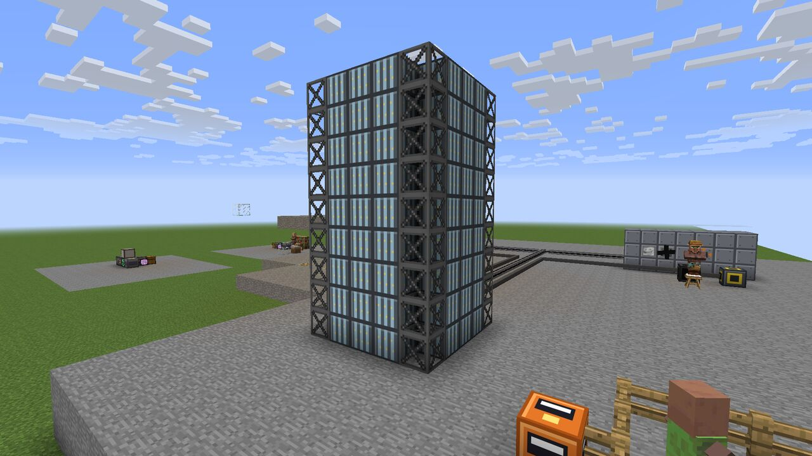
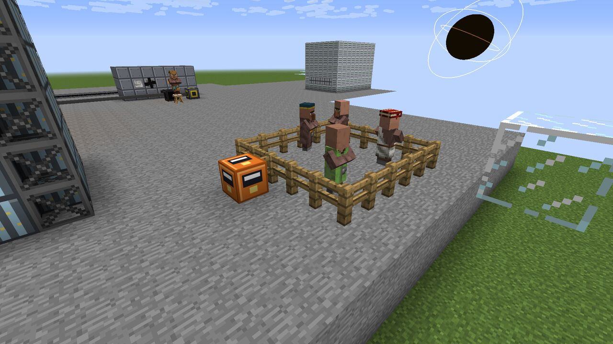
Build it
- A 5 × 5 × 9 tower of Tube Casing with steel frame corners, a Backbone Core up the middle, and a Satellite Dish on top that must see the sky.
- Router Ports in its walls. Run OC cable from each one to a Mainframe's terminal network: each port links one Mainframe.
- Disk Arrays in its input bus: 256 KiB of Filing each, up to 16 MiB.
Linked Mainframes plan as one and pool their dispatch, and the Internet gets one job slot per linked Mainframe, so it runs several jobs at once. Without an executive, one job can only use one Mainframe's Filing. Seat a tamed demon in the boardroom (a manager's office within 6 blocks of the controller) and a job can file across all of them.
Gig workers
A Gig Kiosk within 32 blocks of the Internet enrols every uncontracted villager within 16 blocks of the kiosk. Each one adds half an FTE of dispatch, about half the time. They're paid per operation, 512 operations per emerald, from the Internet's input bus. They agreed to the Terms of Service by standing there.
Robots
An OpenComputers robot standing on a Docking Pad on a linked Mainframe's terminal network, with a Requisition Upgrade, clocks in by calling component.requisition.work(). The workerd loot floppy does it for you. A Mainframe's robots work as one botnet at half their worth, plus a little for each villager seated by a pad as a CAPTCHA solver.
Bots talking to bots. This is the future, and the future doesn't need dental.
Series C · LuV
The AI Data Center. We are pleased to announce a reduction in headcount.
No staff, no wages, no morale. Just water, power, pollution and a model trained on everything your people ever did. Investors love this slide.
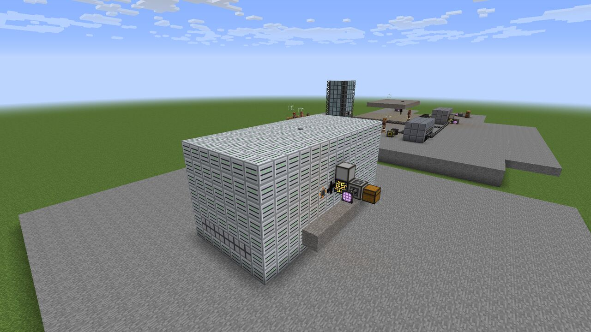
Build it
- A hall of Data Hall Casing 15 wide and 7 high, 7 to 31 blocks long, with three rows of Accelerator Racks per slice over a Raised Floor.
- Four Accelerator Cards per rack. Each card is 0.128 FTE of synthetic labour.
- Hatches: energy, maintenance, an input hatch for water, an input bus, and a muffler. It pollutes while busy.
- 1000 L/s of water. Distilled water counts double. Without it the hall throttles (Limited by: coolant).
It has 8 job slots and 64 MiB of Filing. Its output depends on training, fed by putting your offices' Work Logs in its input bus:
So 1024 logs train it fully, and a trained hall left alone settles at 60 %. Undertrained, it sometimes re-verifies a finished plan, which charges the plan's steps a second time. The plan is always right. The model is just very confident.
| Showcase hall, 135 cards = 17.28 FTE | Training | Planning |
|---|---|---|
| Untrained | 0 | 17.28 steps/s |
| After 512 Work Logs | 0.5 | 43.20 steps/s |
| Fully trained | 1.0 | 69.12 steps/s |
A trained hall also makes Converged Model Weights, which you'll need for the exit.
Legacy assets · ZPM
Stock crafting CPUs. Love the legacy, never buy more.
Every company has a basement full of servers that predate the founders. Don't touch them, they print money. But don't buy new ones either.
- Stock AE2 crafting CPU blocks now need a ZPM assembler. Their crafting-table recipe is gone.
- Blocks placed from now on count for 25 %, and a cluster's co-processing is capped at 64. Each stock cluster with no legacy blocks adds 8 steps/s of planning to its network.
- Blocks already in your world when you added this mod are legacy. They keep their full value, and a network with one plans unmetered.
/ab legacylists where they are.
Grandfathered in. The only kind of grandfather I respect.
The exit · UV
The Singularity. It is not a product. We did not launch it.
We don't call it AGI in the deck. We call it "alignment-dependent upside". It wants things. Give them to it.
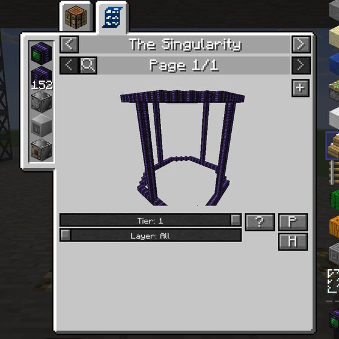
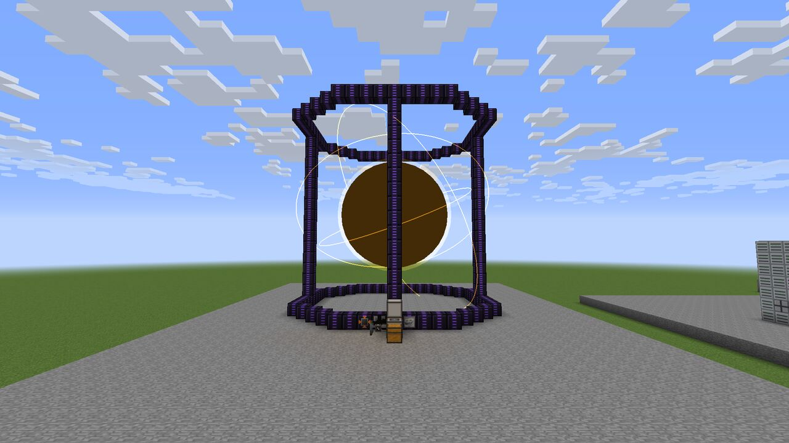
Build it
- A 17-block frame: an octagonal ring of Containment casing at the base and again at the top, and four Containment Pylons, 15 high, at the compass points between them.
- An empty 11 × 11 × 11 cube in the middle. Keep it empty: that's where it appears.
- The controller in the base ring at the front point, and an energy hatch, a maintenance hatch and an input bus in either ring.
It has 64 job slots, unlimited Filing, and unmetered planning for its whole network. Its dispatch is 1024 operations a tick (20 480 a second) at a factor of 100 %, and its output scales with its Alignment, from 0 to 100:
The showcase Singularity sits at Alignment 50, a factor of 75 %: 15 360 operations a second. A factor of 100 % takes Alignment 75. Below 25 it sulks: planning on its network is metered again, at 400 steps/s times the factor.
What it wants
Every 2 to 4 days it opens a request, and gives you a day to answer. Granting adds 15 Alignment; ignoring it takes 20. It only asks for things your network can actually supply.
| Request | How to grant it |
|---|---|
| Paperclips | 2n Paperclips in its input bus, with n going up each time, to 24 |
| Power | A redstone signal on the controller: it draws 4× power for ten minutes |
| Something you have plenty of | 64 of an item your network stocks at least 10 000 of, in its input bus |
| A villager | A contracted villager, off shift, within 4 blocks. Kept "for study", and back a day later at the controller, enlightened. |
| A sabbatical | A redstone signal: half capacity for ten minutes while it thinks about something else |
It never takes anything. A request is granted only by what you bring or approve.
This is the exit. Don't ask who exits whom.
Due diligence
Commands, fixes and the fine print.
Commands
| Command | What it does |
|---|---|
/ab status [x y z] | The nearest facility's bottleneck and figures, and its network's planning |
/ab craft <item> [count] [meta] | Plans and starts a craft, as the Queue button does |
/ab legacy | Where the legacy crafting CPU blocks are |
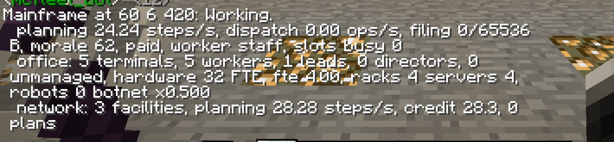
/ab status on the showcase Mainframe: working, its figures, the office and its org chart, and the network's pooled planning across three facilities.When it says "Limited by"
| It says | Fix |
|---|---|
| no power or no ME channel | Power the network, and give the tray or controller a channel |
| no seat within 2 blocks | Put a BiblioCraft seat within 2 blocks of the tray |
| nobody on the seat | Hire someone, or sit down yourself |
| on a break | Wait. Or hire a manager |
| the founder is not grinding | Solve a puzzle. Right-click the typewriter if you closed the window |
| no keyboard in front of the screens | A Mainframe terminal is seat, keyboard, then screen. Put the keyboard between them |
| no desk next to the seat | A BiblioCraft desk beside the seat |
| no typewriter (no planning) | A typewriter within a block of the seat |
| paper (planning at 25 %) | Paper in the tray, or paper or punch cards in the input bus |
| wages unpaid | Emeralds in the tray or input bus |
| morale | Pay, amenities, a break room, a party, fewer managers, less smog, no crunch |
| no books to file plans in | Bookcases, tape reels or disk arrays |
| the structure is incomplete | Check the multiblock against its NEI preview |
| hardware | Servers in the Mainframe's racks |
| coolant (thermal throttling) | 1000 L/s of water into the Data Center |
| training | Work Logs into the Data Center |
| it is sulking | Grant the Singularity's next request |
Dashboards in OpenComputers
An Adapter next to a facility's tray or controller gives you the ab_facility component: status(), planningRate(), setAllocation(share) to pin its planning share (0 to 1, or nil), and setCrunch(bool) (or nil to follow redstone). Keep dashboards on their own OC network, joined to the office's only through the Adapter: an office has more components than one computer can hold.
Milestones the board will ask about
- Help Wanted (HV): craft a Requisition Tray.
- Founder Mode (HV): sit at your own Desk and plan a craft.
- Competitive Salary (HV): hire a villager and seat them.
- In Lieu of a Raise (HV): put a Water Cooler under a tank of water near your Desk.
- Big Iron (EV): form a Mainframe with four servers and an office of four terminals.
- Middle Management (EV): seat an Enderman as a team lead.
- The Corner Office (EV): seat a boss as a director.
- A Series of Tubes (IV): link two Mainframes to the Internet.
- The Gig Economy (IV): build a Gig Kiosk.
- Bots Talking to Bots (IV): clock a robot in with the workerd floppy.
- Reduction in Headcount (LuV): train a Data Center to 95 %.
- Converged (LuV): make Converged Model Weights.
- It Is Not a Product (UV): form the Singularity, then grant it something.
Winding down
To remove the mod, cancel the jobs running on its facilities first. A running job is saved with its facility's block, so removing the mod removes its items. Stock CPUs are unaffected.
Server owners: every number here is a config value in appliedbureaucratics.cfg, and enableComputeRequirement=false turns the whole thing off, leaving the facilities as extra CPUs.
That's the playbook. Build the Desk this week. I want a Mainframe by the next board meeting. And kid, pay your people.
Gregory Thrust
Managing Partner, Hockeystick Capital
Sent from my yacht
Hockeystick Capital is a fictional fund. Applied Bureaucratics is a satirical add-on for GregTech: New Horizons and is not part of the GTNH project. It needs a build of Applied-Energistics-2-NH with the compute policy hooks. The mod and this manual were written by an AI coding agent (Claude). Screenshots are from the showcase world, on the 2.10 daily.